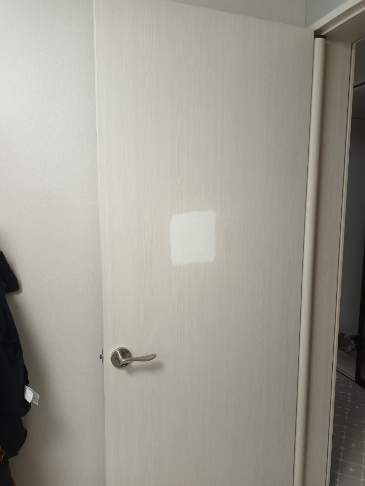
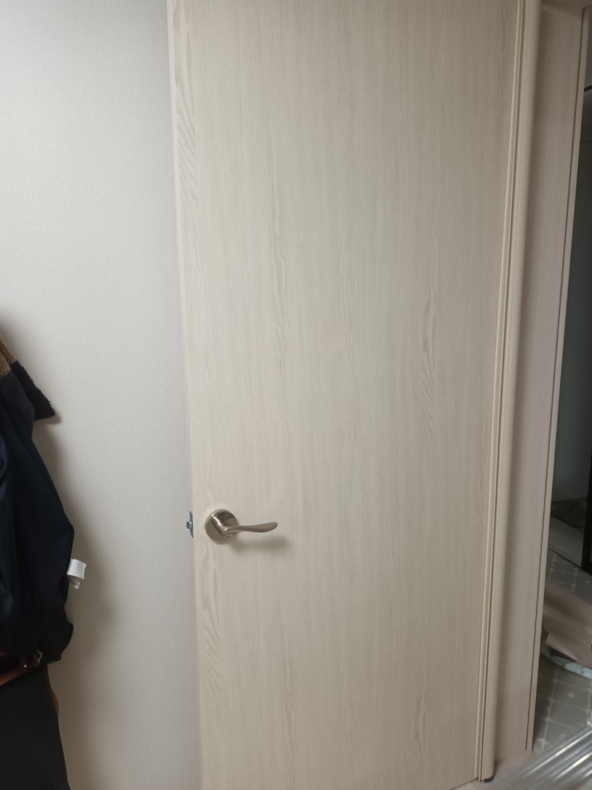

파손 부위 보강
찍히고 파인 바탕을 먼저 보강해 필름이 붙을 면을 고르게 만듭니다.
파손된 방문을 고객님께서 직접 보수하면서 필름이 겹쳐 붙고 표면이 고르지 않아 단순 부분수리가 어려워진 현장입니다. 셀프시공한 부분을 먼저 제거하고 파손된 바탕을 평탄하게 보강한 뒤, 기존 방문과 최대한 비슷한 필름을 골라 손상된 한 면만 시공했습니다.

필름은 바탕의 굴곡과 찍힘이 그대로 드러나는 마감재입니다. 기존 셀프시공을 깨끗하게 제거하고 파손 부위를 단단하게 보강한 다음, 면을 고르게 잡아야 들뜸과 자국을 줄이고 깔끔하게 마감할 수 있습니다.
문짝의 구조가 사용 가능하고 손상이 한쪽 면에 집중됐다면 필요한 면만 정리해 시공할 수 있습니다.
찍히고 파인 바탕을 먼저 보강해 필름이 붙을 면을 고르게 만듭니다.
겹치거나 들뜬 기존 필름을 제거해 새 마감의 완성도를 높입니다.
멀쩡한 반대쪽 면은 유지하고 필요한 한 면을 중심으로 시공합니다.
주변 문과 가구 색상을 확인해 최대한 비슷한 필름을 선정합니다.
기존 셀프시공 제거부터 파손부 보강, 필름 선정과 한 면 마감까지 순서대로 진행합니다.
주변을 보호하고 방문 파손과 셀프시공 범위를 확인합니다.
겹쳐 붙고 들뜬 셀프시공 필름과 접착 흔적을 정리합니다.
찍히고 파인 부분을 보강한 뒤 방문 표면을 고르게 만듭니다.
주변 색상과 질감을 비교해 비슷한 필름을 골라 정확히 재단합니다.
모서리와 가장자리까지 밀착해 시공하고 들뜸 여부를 확인합니다.
셀프시공 흔적을 제거하고 파손 부위를 평탄하게 만든 뒤, 기존 공간과 최대한 비슷한 필름으로 방문 한 면을 마감했습니다.

“다들 셀프시공한 거 보시고 수리 힘들다고 하시던데, 오랜 시간 정성껏 깔끔하게 시공해주셔서 너무 감사해요~”
| 비교 항목 | 부분복원 | 한 면 필름 시공 |
|---|---|---|
| 적합한 상태 | 찍힘이나 긁힘이 작고 기존 필름이 안정적일 때 | 손상이 넓거나 셀프시공으로 표면 정리가 필요할 때 |
| 시공 범위 | 손상된 부분만 국소적으로 복원 | 손상된 방문의 한쪽 면 전체를 시공 |
| 색상 | 현장 조색으로 기존 필름에 맞춤 | 주변과 최대한 비슷한 기성 필름을 선정 |
| 표면 정리 | 손상 부위 중심으로 보강·평탄화 | 한 면 전체의 기존 시공 제거와 바탕 정리 |
| 효과 | 기존 필름을 최대한 유지 | 넓은 손상과 셀프시공 흔적을 한 번에 정리 |
방문 전체와 파손 부위, 주변 문 색상이 함께 보이도록 보내주시면 상담이 더 정확합니다.